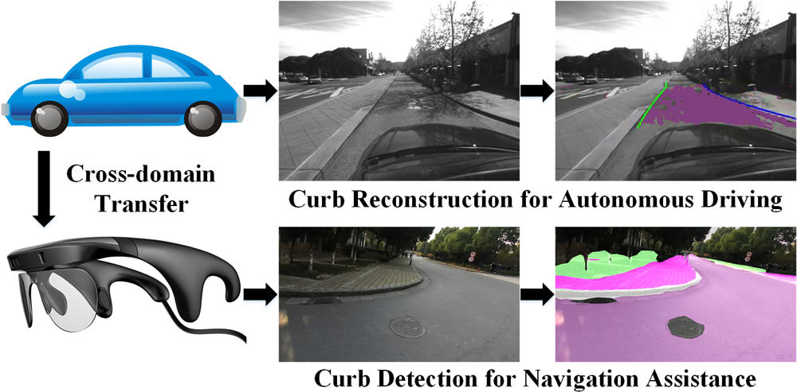
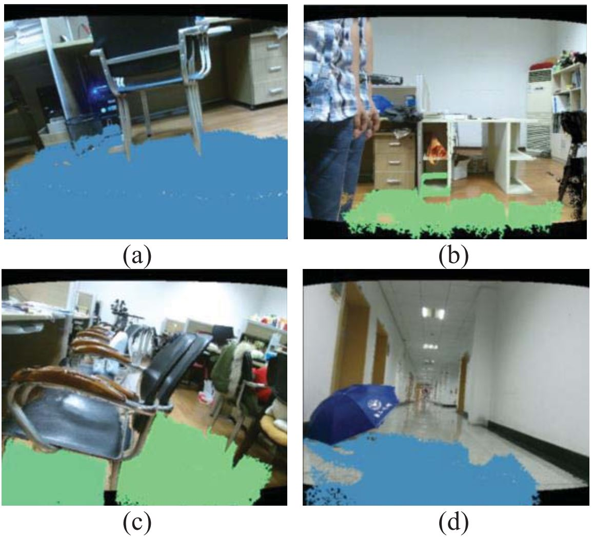

Welcome
I am a Professor at School of Robotics
and
National Engineering Research Center of Robot Visual Perception and Control Technology,
Hunan University (HNU).
I was a PostDoctoral Researcher
at Computer Vision for Human-Computer Interaction (CV:HCI) Lab,
Karlsruhe Institute of Technology (KIT),
where I worked with Prof. Rainer Stiefelhagen.
I obtained my PhD degree in Information Sensing and Instrumentation
from Zhejiang University (ZJU).
My PhD research was jointly advised by Prof. Kaiwei Wang
and Prof. Jian Bai
at State Key Laboratory of Modern Optical Instrumentation,
ZJU,
as well as Prof. Luis Miguel Bergasa
at Robotics and eSafety (RobeSafe) Research Group,
University of Alcalá (UAH).
Before my PhD, I obtained my dual B.S. degrees in Measurement Technology and Instrumentation
from Beijing Institute of Technology (BIT) and Economics from Peking University (PKU).
杨恺伦，湖南大学机器人学院教授、博士生导师、硕士生导师、入选国家高层次青年人才计划。围绕多模态、高维度、全视角计算光学和计算视觉开展研究，以支撑自动驾驶、盲人辅助、四足机器人等应用。
2014年6月获北京理工大学测控技术与仪器和北京大学经济学双学位，2019年6月获浙江大学测试计量技术及仪器博士学位。
2017年9月至2018年9月在西班牙阿尔卡拉大学（UAH）机器人与电子安全（RobeSafe）研究组进行博士联合培养。
2019年11月至2023年1月在德国卡尔斯鲁厄理工学院（KIT）计算机视觉与人机交互（CV:HCI）实验室开展博士后研究。
主持国家自然科学基金面上项目、优秀青年科学基金项目（海外）。
在IEEE汇刊TPAMI、TIP、TNNLS、T-ITS、TMM、T-ASE、T-IV、TIM、TCI、TAI与计算机视觉、机器学习、人工智能、机器人、多媒体顶会CVPR、NeurIPS、ECCV、AAAI、IJCAI、ICRA、IROS、MM等期刊会议上发表论文100余篇，入选斯坦福全球前2%顶尖科学家。
现拥有及与他人合有专利40余项，4项形成技术转移，获共青团中央举办的“创青春”创新创业大赛全国总冠军。担任IEEE T-ITS AE、RA-L AE、Robot Learning AE。获IEEE IV 2021最佳论文奖，ICRA 2024 人机交互最佳论文提名奖。
现有若干博士后、博士生、直博生、硕士生、研究助理招生名额。 教育最重要的目标莫过于塑造独立之人格、自由之精神，鼓励尝试，宽容失败，培养怀有家国情怀、志在改造人生、改造社会、改造世界的知识阶层。 深刻地认识到大学教育不仅仅是传授知识，甚至也不止培养能力，更为重要的是营造平等的学术氛围并在与同学交互的过程中启发科学思考和科学研究，形成“独立之人格”。 课题组注重营造平等的交流与探讨的气氛，提倡以co-work的形式相互合作。 Computer Vision for Panoramic Understanding Lab (CV:PU) 研究小组非常年轻，沟通融洽， 除了本小组成员外，还与卡尔斯鲁厄理工学院、浙江大学光电学院、湖南大学机器人学院的其他导师的学生一起共同学习与科研，可以充分交叉协作创新。 如果您对 {computer vision, deep learning, scene understanding, autonomous driving} 感兴趣，想到湖南大学机器人学院攻读博士、硕士学位， 或者想和我们开展科研合作，请发送邮件到 {kailun.yang at hnu.edu.cn} 。
Publications
 |
 |
K. Yang, K. Wang, L.M. Bergasa, E. Romera, W. Hu, D. Sun, J. Sun, R. Cheng, T. Chen, E. López. Unifying Terrain Awareness for the Visually Impaired through Real-Time Semantic Segmentation. Sensors, 2018. Belongs to the Special Issue [Wearable Smart Devices] [HTML] [PDF] [DATA1] [DATA2] [TensorFlow] [PyTorch] [NVIDIA TX1/TX2 Implementation] |
 |
K. Yang, K. Wang, H. Chen, J. Bai. Reducing the minimum range of a RGB-depth sensor to aid navigation in visually impaired individuals. Applied Optics, 2018. [Highlighted as an Editors' Pick] [PDF] |

 |
R. Cheng, K. Wang, K. Yang, N. Long, J. Bai, D. Liu. Real-time pedestrian crossing lights detection algorithm for the visually impaired. Multimedia Tools and Applications, 2018. [PDF] [DATA] |
 |
K. Yang, R. Cheng, L.M. Bergasa, E. Romera, K. Wang, N. Long. Intersection perception through real-time semantic segmentation to assist navigation of visually impaired pedestrians. In IEEE International Conference on Robotics and Biomimetics (ROBIO), Kuala Lumpur, Malaysia, December 2018. [PDF] [DATA1] [DATA2] [BLOG] |
|
K. Yang, L.M. Bergasa, E. Romera, J. Wang, K. Wang, E. López. Perception framework of water hazards beyond traversability for real-world navigation assistance systems. In IEEE International Conference on Robotics and Biomimetics (ROBIO), Kuala Lumpur, Malaysia, December 2018. [PDF] [DATA] |
 |
K. Yang, L.M. Bergasa, E. Romera, X. Huang, K. Wang. Predicting polarization beyond semantics for wearable robotics. In IEEE-RAS International Conference on Humanoid Robots (Humanoids), Beijing, China, November 2018. [Spotlight Paper] [PDF] [DATA] [PyTorch] [BLOG] |
 |
J. Wang, K. Yang, W. Hu, K. Wang. An environmental perception and navigational assistance system for visually impaired persons based on semantic stixels and sound interaction. In IEEE International Conference on Systems, Man, and Cybernetics (SMC), Miyazaki, Japan, October 2018. [PDF] [BLOG] |
 |
N. Long, K. Wang, R. Cheng, W. Hu, K. Yang. Low Power Millimeter Wave Radar System for the Visually Impaired. In IET International Radar Conference (IRC), Nanjing, China, October 2018. [Excellent Paper Award] [PDF] [BLOG] |
 |
Y. Ye, K. Wang, W. Hu, K. Yang. Study on the brain mechanisum in visual assistance for the blind. In West-Lake Photonics Symposium (WPS), Hangzhou, China, October 2018. [PDF] |
 |
Z. Huang, K. Wang, K. Yang, R. Cheng, J. Bai. Glass detection and recognition based on the fusion of ultrasonic sensor and RGB-D sensor for the visually impaired. In West-Lake Photonics Symposium (WPS), Hangzhou, China, October 2018. [PDF] |
|
N. Long, K. Wang, R. Cheng, K. Yang, W. Hu, J. Bai. Mutiple Target Warning through Millimeter Wave Radar and RGB-Depth Sensors. In West-Lake Photonics Symposium (WPS), Hangzhou, China, October 2018. [PDF] |
|  |
K. Yang, L.M. Bergasa, E. Romera, D. Sun, K. Wang, R. Barea. Semantic perception of curbs beyond traversability for real-world navigation assistance systems. In IEEE International Conference on Vehicular Electronics and Safety (ICVES), Madrid, Spain, September 2018. [PDF] [DATA1] [DATA2] [BLOG] |
 |
L. Fei, K. Wang, S. Lin, K. Yang, R. Cheng and H. Chen. Scene text detection and recognition system for visually impaired people in real world. In SPIE Security + Defence Symposium, Berlin, Germany, September 2018. [Best Student Paper] [PDF] [Presentation] [BLOG] |
 |
N. Long, K. Wang, R. Cheng, K. Yang, J. Bai. Fusion of Millimeter wave Radar and RGB-Depth sensors for assisted navigation of the visually impaired. In SPIE Security + Defence Symposium, Berlin, Germany, September 2018. [PDF] [Presentation] |
 |
Z. Huang, K. Wang, K. Yang, R. Cheng, J. Bai. Glass Detection and Recognition Based on the Fusion of Ultrasonic Sensor and RGB-D Sensor for the Visually Impaired. In SPIE Security + Defence Symposium, Berlin, Germany, September 2018. [PDF] [Presentation] |
 |
R. Cheng, K. Wang, L. Lin, K. Yang. Visual Localization of Key Positions for Visually Impaired People. In International Conference on Pattern Recognition (ICPR), Beijing, China, August 2018. [PDF] [arxiv] [DATA] [CODE] [BLOG] |
 |
S. Lin, K. Wang, K. Yang, R. Cheng. KrNet: A Kinetic Real-time Convolutional Neural Network for Navigational Assistance. In International Conference on Computers Helping People with Special Needs (ICCHP), Linz, Austria, July 2018. [PDF] [BLOG] |
 |
K. Yang, L.M. Bergasa, E. Romera, R. Cheng, T. Chen, K. Wang. Unifying terrain awareness through real-time semantic segmentation. In IEEE Intelligent Vehicles Symposium (IV), Suzhou, China, June 2018. [Main Publication in Google Scholar Metrics] [PDF] [VIDEO] [DATA1] [DATA2] [TensorFlow] [PyTorch] [BLOG] |
 |
K. Yang, K. Wang, S. Lin, J. Bai, L.M. Bergasa, R. Arroyo. Long-range Traversability Awareness and Low-lying Obstacle Negotiation with RealSense for the Visually Impaired. In International Conference on Information Science and System (ICISS), Jeju Island, South Korea, April 2018. [PDF] |
 |
H. Chen, K. Wang, K. Yang. Improving RealSense by Fusing Color Stereo Vision and Infrared Stereo Vision for the Visually Impaired. In International Conference on Information Science and System (ICISS), Jeju Island, South Korea, April 2018. [PDF] |
|
K. Yang, K. Wang, S. Lin, J. Bai, L.M. Bergasa, R. Arroyo. Long-range Traversability Awareness and Low-lying Obstacle Negotiation with RealSense for the Visually Impaired. In International Conference on Frontiers of Image Processing (ICFIP), Barcelona, Spain, March 2018. [Best Paper Award] [PDF] [BLOG] |
 |
H. Chen, K. Wang, K. Yang. Improving RealSense by Fusing Color Stereo Vision and Infrared Stereo Vision for the Visually Impaired. In International Conference on Frontiers of Image Processing (ICFIP), Barcelona, Spain, March 2018. [PDF] |
 |
K. Yang, K. Wang, R. Cheng, W. Hu, X. Huang, J. Bai. Detecting Traversable Area and Water Hazards for the Visually Impaired with a pRGB-D Sensor. Sensors, 2017. [HTML] [PDF] [DATA] |
 |
K. Yang, K. Wang, X. Zhao, R. Cheng, J. Bai, Y. Yang, D. Liu. IR stereo RealSense: Decreasing minimum range of navigational assistance for visually impaired individuals. Journal of Ambient Intelligence and Smart Environments, 2017. [PDF] |
 |
R. Cheng, K. Wang, K. Yang, N. Long, W. Hu, H. Chen, J. Bai, D. Liu. Crosswalk navigation for people with visual impairments on a wearable device. Journal of Electronic Imaging, 2017. [PDF] [DATA1] [DATA2] |
 |
X. Huang, J. Bai, K. Wang, Q. Liu, Y. Luo, K. Yang, X. Zhang. Target enhanced 3D reconstruction based on polarization-coded structured light. Optics Express, 2017. [HTML] [PDF] |
 |
K. Yang, K. Wang, W. Hu, J. Bai. Expanding the Detection of Traversable Area with RealSense for the Visually Impaired. Sensors, 2016. [HTML] [PDF] |
|
X. Zhao, K. Wang, K. Yang, W. Hu. Unconstrained Face Detection and Recognition Based on RGB-D Camera for the Visually Impaired. In International Conference on Graphic and Image Processing (ICGIP), Tokyo, Japan, August 2016. [PDF] |
 |
K. Yang, K. Wang, R. Cheng, X. Zhu. A new approach of point cloud processing and scene segmentation for guiding the visually impaired. In IET International Conference on Biomedical Image and Signal Processing (ICBISP), Beijing, China, November 2015. [PDF] [BLOG] |
|  |
R. Cheng, K. Wang, K. Yang, X. Zhao. A Ground and Obstacle Detection Algorithm for the Visually Impaired. In IET International Conference on Biomedical Image and Signal Processing (ICBISP), Beijing, China, November 2015. [PDF] |